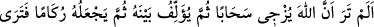
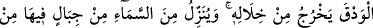
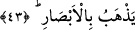

varlığından fânî olunca da O onun vâsıtasıyla konuşur.”
“Her biri kendi tesbihini ve duâsını bilmiştir.” ifâdesi işâret etmektedir ki her
varlığın duâ ve ibâdetine, yâni kulluğunu yerine getirmesine ve tesbîhine, yâni
rubûbiyyeti senâ etmesine karşılık kendisine uygun bir ilmi ve şuuru vardır. Çünkü her
şeyin, kendisiyle ayakta durduğu bir melekûtü vardır. Melekûtun ayakta durması ise
Allah Teâla’nın elindedir. Nitekim Allah: “Her şeyin melekûtü kendi elinde olan
Allah’ı tesbih ve takdis ederim.” (Yâsîn, 36/83) buyurmuştur. Melekût âlemi, mahza
hayat ve ilimdir. Nitekim âyette “Âhiret yurduna gelince, işte asıl hayat odur” (el-
Ankebût, 29/64) buyrulur.
Melekût ruhlar âlemidir. Ruh kabul etme istidâdına göre her şey için O’ndan bir ruh
vardır. İnsan en büyük ruhu kabul edici olduğu için en güzel kıvamda yaratılmıştır. Bu
sebeple insanların kâmilleri, mahlûkâtın en üstün ve en şereflileri olmuşlardır.
İnsan, melekût âleminden, hatta rubûbiyyet âleminden nasîbi ölçüsünde kendi salât ve
tesbîhinin husûsiyetini bilir. İnsan, diğer yaratıklar içinde bu vasfıyla tektir. Melek de
yine melekût âleminden nasibi ölçüsünde salât ve tesbîhini bilir. Hayvânlar ve cansız
varlıklar ise şuursuz olarak sadece sûreten melekûtları ile salât ve tesbihlerini bilirler.
“Allah, onların yapmakta olduklarını hakkıyla bilir.” Yâni kemal üzere hakîkati ile
bilir. Onlar ise kendi istidâdları nisbetinde bilirler. et-Te’vîlât’tan yapılan nakil burada
bitti.
Bu açıklamalar, Allah Teâlâ’nın konuşturmasıyla cemâdâtın konuşması, yine
harikulâde bir yolla veya sadece keşf ve ıyân ehlinin duyup anlayabileceği bir yolla
hayvanların konuşması gerçeğini ortadan kaldırmaz. Nitekim bunun misalleri İsrâ
sûresinde geçti.
Allah Sübhânehû ve Teâlâ’dan bizi nefesi ancak şerefli bir zikirlerle, vakti de ancak
latif bir güzel hâlle geçen kimselerden kılmasını niyaz ederiz. Çünkü O “Feyyâz”
(çokça feyiz saçan), “Vehhâb” (bol bol veren) ve “Cevvâd” (oldukça cömert) olandır.
43. Görmez misin ki Allah bulutları sevk ediyor; sonra onları bir araya getirip üst
üste yığıyor. İşte görüyorsun ki bunlar arasından yağmur çıkıyor. O, gökten,
oradaki dağlardan (dağlar büyüklüğünde bulutlardan) dolu indirir. Artık onu
dilediğine isâbet ettirir; dilediğinden de onu uzak tutar; (bu bulutların) şimşeğinin
parıltısı neredeyse gözleri alır!